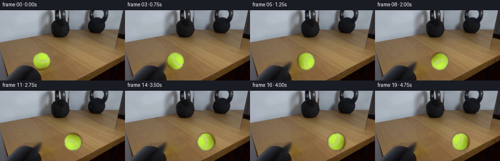
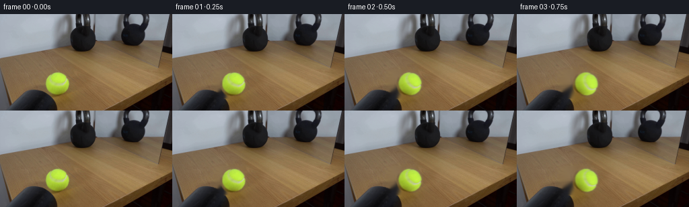
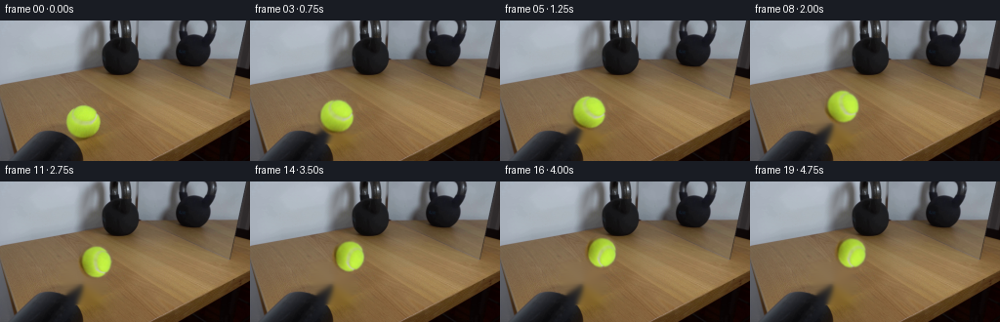
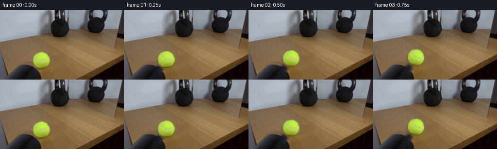

CODING AGENTS AS PIXEL WORLD MODELS
traex/GPT-5.6-Sol · 0156
点击播放 · 原生 RGB 像素
逐轮保存的候选
回放视频、检查图与代码变化。
每份候选均可单独播放。实际图片检查记录在下方工具轨迹中。
候选 01播放与检查图
点击播放 · 原生 RGB 像素


展开代码变化
--- 上一保存版本
+++ 本次保存版本
@@ -0,0 +1,119 @@
+from pathlib import Path
+import numpy as np
+import cv2
+from PIL import Image
+import artifact_io
+
+ROOT = Path(__file__).resolve().parent
+base = np.asarray(Image.open(ROOT/'first_frame.png').convert('RGB'), dtype=np.uint8)
+H,W = base.shape[:2]
+
+# Initial ball is the saturated chartreuse connected component. We isolate its
+# core and use a softly feathered object alpha so the original photographic
+# texture, fuzz, illumination and antialiasing are retained while it moves.
+hsv = cv2.cvtColor(base, cv2.COLOR_RGB2HSV)
+core = ((hsv[:,:,0] >= 24) & (hsv[:,:,0] <= 52) &
+ (hsv[:,:,1] >= 75) & (hsv[:,:,2] >= 70)).astype(np.uint8)*255
+n, labels, stats, cents = cv2.connectedComponentsWithStats(core)
+idx = max(range(1,n), key=lambda i: stats[i,cv2.CC_STAT_AREA])
+x,y,w,h,_ = stats[idx]
+# Generous crop includes the ball's soft dark rim and cast shadow.
+x0,y0,x1,y1 = x-5,y-4,x+w+6,y+h+6
+patch = base[y0:y1,x0:x1].copy()
+# Matte follows a near circle; asymmetric bottom extension keeps the contact shadow.
+ph,pw = patch.shape[:2]
+yy,xx = np.mgrid[:ph,:pw]
+cx,cy = (x+w/2)-x0, (y+h/2)-y0
+r = max(w,h)/2 + 1.2
+d = np.sqrt(((xx-cx)/1.00)**2 + ((yy-cy)/1.00)**2)
+alpha = np.clip((r+1.8-d)/2.5,0,1)
+# Add a translucent oval immediately under the ball for its photographed shadow.
+shadow = np.exp(-(((xx-cx)/(r*1.12))**2 + ((yy-(cy+r*.76))/(r*.34))**2)*3.0)*0.34
+alpha = np.maximum(alpha, shadow)
+# Keep the actual segmented fringe fully opaque-ish.
+localcore = core[y0:y1,x0:x1]/255.0
+localcore = cv2.GaussianBlur(localcore.astype(np.float32),(0,0),1.0)
+alpha = np.maximum(alpha, np.clip(localcore*1.25,0,1))
+alpha = cv2.GaussianBlur(alpha.astype(np.float32),(0,0),0.45)
+
+# Remove the source ball once. Telea uses the surrounding wood grain; then we
+# reintroduce directional grain across the relatively small repaired area.
+mask = np.zeros((H,W),np.uint8)
+cv2.ellipse(mask,(int(cx+x0),int(cy+y0)),(int(r+2),int(r+3)),0,0,360,255,-1)
+clean_bgr = cv2.inpaint(cv2.cvtColor(base,cv2.COLOR_RGB2BGR),mask,4,cv2.INPAINT_TELEA)
+clean = cv2.cvtColor(clean_bgr,cv2.COLOR_BGR2RGB)
+# A mild horizontal blur suppresses circular inpaint traces while retaining table tone.
+repair = cv2.GaussianBlur(clean[y-5:y+h+6,x-5:x+w+6],(7,1),0)
+clean[y-5:y+h+6,x-5:x+w+6] = repair
+
+# Ball center starts at about (85,103). The heavy kettlebell is the large matte
+# black object on the right; contact with its lower-left flank occurs near x=187.
+start_cx, start_cy = cx+x0, cy+y0
+contact_cx = 177.0 # right edge of the ball reaches bell around x=194
+travel = contact_cx-start_cx
+
+# Source texture is rotated with rolling angle. This is subtle at video scale,
+# but gives the tennis-ball seam/highlights physically plausible movement.
+def rotated_sprite(angle_deg):
+ M=cv2.getRotationMatrix2D((cx,cy),angle_deg,1.0)
+ p=cv2.warpAffine(patch,M,(pw,ph),flags=cv2.INTER_CUBIC,borderMode=cv2.BORDER_REFLECT_101)
+ a=cv2.warpAffine(alpha,M,(pw,ph),flags=cv2.INTER_CUBIC,borderMode=cv2.BORDER_CONSTANT,borderValue=0)
+ return p,a
+
+def composite(dst, spr, a, center_x, center_y):
+ # Preserve fractional-pixel motion by shifting sprite before compositing.
+ tx=center_x-cx; ty=center_y-cy
+ ix=int(np.floor(tx)); iy=int(np.floor(ty)); fx=tx-ix; fy=ty-iy
+ M=np.float32([[1,0,fx],[0,1,fy]])
+ spr=cv2.warpAffine(spr,M,(pw,ph),flags=cv2.INTER_LINEAR,borderMode=cv2.BORDER_REFLECT_101)
+ a=cv2.warpAffine(a,M,(pw,ph),flags=cv2.INTER_LINEAR,borderMode=cv2.BORDER_CONSTANT)
+ X0,Y0=ix,iy; X1,Y1=ix+pw,iy+ph
+ sx0=max(0,-X0); sy0=max(0,-Y0); sx1=pw-max(0,X1-W); sy1=ph-max(0,Y1-H)
+ X0=max(0,X0);Y0=max(0,Y0);X1=min(W,X1);Y1=min(H,Y1)
+ aa=a[sy0:sy1,sx0:sx1,None]
+ roi=dst[Y0:Y1,X0:X1].astype(np.float32)
+ dst[Y0:Y1,X0:X1]=np.clip(roi*(1-aa)+spr[sy0:sy1,sx0:sx1]*aa,0,255).astype(np.uint8)
+
+frames=[]
+for i in range(20):
+ if i==0:
+ frames.append(base.copy()); continue
+ # Constant, slow real-time roll for four seconds, then a tiny elastic
+ # compression/recoil at impact. The 30 lb bell itself remains immovable.
+ if i <= 16:
+ u=i/16.0
+ # nearly constant velocity, with just a little rolling resistance
+ progress=1.025*u-0.025*u*u
+ bx=start_cx + travel*progress
+ by=start_cy + 0.35*np.sin(np.pi*u)
+ squash=1.0
+ else:
+ # impact at frame 16: brief 1â2 px rebound, then rest against the bell
+ offsets={17:-1.8,18:-2.8,19:-2.1}
+ bx=contact_cx+offsets[i]
+ by=start_cy
+ squash={17:0.94,18:0.975,19:0.99}[i]
+ # Base remains locked off and absolutely unchanged outside moving-object regions.
+ fr=clean.copy()
+ angle=-(bx-start_cx)/(max(w,h)/2.0)*180/np.pi
+ spr,a=rotated_sprite(angle)
+ if squash != 1.0:
+ # Horizontal compression against bell, area approximately conserved.
+ nw=max(1,int(round(pw*squash))); nh=max(1,int(round(ph/squash)))
+ spr=cv2.resize(spr,(nw,nh),interpolation=cv2.INTER_CUBIC)
+ a=cv2.resize(a,(nw,nh),interpolation=cv2.INTER_CUBIC)
+ # place resized sprite with its own center convention
+ old_cx,old_cy=cx,cy
+ cx2=cx*nw/pw; cy2=cy*nh/ph
+ save=(globals()['cx'],globals()['cy'],globals()['pw'],globals()['ph'])
+ globals()['cx'],globals()['cy'],globals()['pw'],globals()['ph']=cx2,cy2,nw,nh
+ composite(fr,spr,a,bx,by)
+ globals()['cx'],globals()['cy'],globals()['pw'],globals()['ph']=save
+ else:
+ composite(fr,spr,a,bx,by)
+ frames.append(fr)
+
+frames=np.stack(frames).astype(np.uint8)
+# Contract guarantee.
+frames[0]=base
+artifact_io.save(frames, ROOT)
候选 02播放与检查图
点击播放 · 原生 RGB 像素


展开代码变化
--- 上一保存版本
+++ 本次保存版本
@@ -46,13 +46,16 @@
repair = cv2.GaussianBlur(clean[y-5:y+h+6,x-5:x+w+6],(7,1),0)
clean[y-5:y+h+6,x-5:x+w+6] = repair
-# Ball center starts at about (85,103). The heavy kettlebell is the large matte
-# black object on the right; contact with its lower-left flank occurs near x=187.
+# Ball center starts at about (85,103). The real kettlebell is the dark object
+# at x=105..142 (the object at x=180..220 is its mirror image). Perspective
+# makes the physical table-top path run up and right toward the bell's foot.
start_cx, start_cy = cx+x0, cy+y0
-contact_cx = 177.0 # right edge of the ball reaches bell around x=194
-travel = contact_cx-start_cx
+contact_cx, contact_cy = 103.5, 72.5
+dx,dy = contact_cx-start_cx, contact_cy-start_cy
+travel = float(np.hypot(dx,dy))
+ux,uy = dx/travel,dy/travel
-# Source texture is rotated with rolling angle. This is subtle at video scale,
+# Source texture is rotated with rolling angle. This is subtle at video scale,
# but gives the tennis-ball seam/highlights physically plausible movement.
def rotated_sprite(angle_deg):
M=cv2.getRotationMatrix2D((cx,cy),angle_deg,1.0)
@@ -60,15 +63,15 @@
a=cv2.warpAffine(alpha,M,(pw,ph),flags=cv2.INTER_CUBIC,borderMode=cv2.BORDER_CONSTANT,borderValue=0)
return p,a
-def composite(dst, spr, a, center_x, center_y):
- # Preserve fractional-pixel motion by shifting sprite before compositing.
- tx=center_x-cx; ty=center_y-cy
+def composite(dst, spr, a, center_x, center_y, sprite_cx, sprite_cy):
+ ph2,pw2=spr.shape[:2]
+ tx=center_x-sprite_cx; ty=center_y-sprite_cy
ix=int(np.floor(tx)); iy=int(np.floor(ty)); fx=tx-ix; fy=ty-iy
M=np.float32([[1,0,fx],[0,1,fy]])
- spr=cv2.warpAffine(spr,M,(pw,ph),flags=cv2.INTER_LINEAR,borderMode=cv2.BORDER_REFLECT_101)
- a=cv2.warpAffine(a,M,(pw,ph),flags=cv2.INTER_LINEAR,borderMode=cv2.BORDER_CONSTANT)
- X0,Y0=ix,iy; X1,Y1=ix+pw,iy+ph
- sx0=max(0,-X0); sy0=max(0,-Y0); sx1=pw-max(0,X1-W); sy1=ph-max(0,Y1-H)
+ spr=cv2.warpAffine(spr,M,(pw2,ph2),flags=cv2.INTER_LINEAR,borderMode=cv2.BORDER_REFLECT_101)
+ a=cv2.warpAffine(a,M,(pw2,ph2),flags=cv2.INTER_LINEAR,borderMode=cv2.BORDER_CONSTANT)
+ X0,Y0=ix,iy; X1,Y1=ix+pw2,iy+ph2
+ sx0=max(0,-X0); sy0=max(0,-Y0); sx1=pw2-max(0,X1-W); sy1=ph2-max(0,Y1-H)
X0=max(0,X0);Y0=max(0,Y0);X1=min(W,X1);Y1=min(H,Y1)
aa=a[sy0:sy1,sx0:sx1,None]
roi=dst[Y0:Y1,X0:X1].astype(np.float32)
@@ -78,39 +81,30 @@
for i in range(20):
if i==0:
frames.append(base.copy()); continue
- # Constant, slow real-time roll for four seconds, then a tiny elastic
- # compression/recoil at impact. The 30 lb bell itself remains immovable.
+ # Smooth, slow roll for four seconds, followed by a nearly inelastic hit.
if i <= 16:
u=i/16.0
- # nearly constant velocity, with just a little rolling resistance
progress=1.025*u-0.025*u*u
- bx=start_cx + travel*progress
- by=start_cy + 0.35*np.sin(np.pi*u)
+ bx=start_cx + dx*progress
+ by=start_cy + dy*progress
+ scale=1.0-0.14*progress # perspective shrink as the ball rolls away
squash=1.0
else:
- # impact at frame 16: brief 1â2 px rebound, then rest against the bell
- offsets={17:-1.8,18:-2.8,19:-2.1}
- bx=contact_cx+offsets[i]
- by=start_cy
- squash={17:0.94,18:0.975,19:0.99}[i]
- # Base remains locked off and absolutely unchanged outside moving-object regions.
+ # One compressed exposure, a tiny reverse recoil, then settle.
+ offsets={17:0.0,18:-1.6,19:-0.45}
+ bx=contact_cx+ux*offsets[i]
+ by=contact_cy+uy*offsets[i]
+ scale=0.86
+ squash={17:0.94,18:0.98,19:0.995}[i]
fr=clean.copy()
- angle=-(bx-start_cx)/(max(w,h)/2.0)*180/np.pi
+ distance=float(np.hypot(bx-start_cx,by-start_cy))
+ angle=-distance/(max(w,h)/2.0)*180/np.pi
spr,a=rotated_sprite(angle)
- if squash != 1.0:
- # Horizontal compression against bell, area approximately conserved.
- nw=max(1,int(round(pw*squash))); nh=max(1,int(round(ph/squash)))
- spr=cv2.resize(spr,(nw,nh),interpolation=cv2.INTER_CUBIC)
- a=cv2.resize(a,(nw,nh),interpolation=cv2.INTER_CUBIC)
- # place resized sprite with its own center convention
- old_cx,old_cy=cx,cy
- cx2=cx*nw/pw; cy2=cy*nh/ph
- save=(globals()['cx'],globals()['cy'],globals()['pw'],globals()['ph'])
- globals()['cx'],globals()['cy'],globals()['pw'],globals()['ph']=cx2,cy2,nw,nh
- composite(fr,spr,a,bx,by)
- globals()['cx'],globals()['cy'],globals()['pw'],globals()['ph']=save
- else:
- composite(fr,spr,a,bx,by)
+ nw=max(1,int(round(pw*scale*squash)))
+ nh=max(1,int(round(ph*scale/squash)))
+ spr=cv2.resize(spr,(nw,nh),interpolation=cv2.INTER_CUBIC)
+ a=cv2.resize(a,(nw,nh),interpolation=cv2.INTER_CUBIC)
+ composite(fr,spr,a,bx,by,cx*nw/pw,cy*nh/ph)
frames.append(fr)
frames=np.stack(frames).astype(np.uint8)
可观测工具轨迹
实际执行的命令与返回图片。
命令 1exit 0
/bin/bash -lc "cat GENERATION_RULES.md && printf '\\n---PROMPT---\\n' && cat prompt.txt"
命令 2exit 127
/bin/bash -lc "find . -maxdepth 2 -type f -printf '%p %s bytes\\n' | sort && file first_frame.png"
命令 3exit 0
/bin/bash -lc "python3 - <<'PY'
from PIL import Image
import numpy as np
im=np.array(Image.open('first_frame.png').convert('RGB'))
print(im.shape,im.dtype,im.min(),im.max(), im.mean((0,1)), im.std((0,1)))
# quantile by channel and lum
for i,n in enumerate('RGB'):
print(n,np.percentile(im[:,:,i],[0,1,5,10,25,50,75,90,95,99,100]).round(1))
# sample grid numeric RGB at 16x9 centers
for y in np.linspace(8,136,9).astype(int):
print('y',y, ['%02x%02x%02x'%tuple(im[y,x]) for x in np.linspace(8,248,16).astype(int)])
PY"命令 4exit 0
/bin/bash -lc "python3 - <<'PY'
try: import cv2; print('cv2',cv2.__version__)
except Exception as e: print(e)
from PIL import Image
import numpy as np
im=np.asarray(Image.open('first_frame.png').convert('RGB'))
# ANSI-independent grayscale ascii at full coarse res, contrast equalized
lum=im@np.array([.299,.587,.114])
chars='@%#*+=-:. '
for y in range(0,144,3):
s=''
for x in range(0,256,3):
a=lum[y:y+3,x:x+3].mean(); s+=chars[min(9,int(a/256*10))]
print(s)
PY"命令 5exit 0
/bin/bash -lc "python3 - <<'PY'
import cv2,numpy as np
from PIL import Image
im=cv2.imread('first_frame.png'); hsv=cv2.cvtColor(im,cv2.COLOR_BGR2HSV)
for name,lo,hi in [('green',(25,60,60),(50,255,255)),('dark',(0,0,0),(180,255,45)),('low',(0,0,0),(180,255,80)),('gray',(0,0,80),(180,70,200))]:
m=cv2.inRange(hsv,np.array(lo),np.array(hi)); n,l,st,cen=cv2.connectedComponentsWithStats(m)
print('\\n',name,'count',m.sum()/255)
for i in np.argsort(st[1:,4])[-15:][::-1]+1:
x,y,w,h,a=st[i];
if a>5: print((x,y,w,h,a),cen[i])
# dominant exact-ish clusters kmeans
pix=im.reshape(-1,3).astype(np.float32)
crit=(cv2.TERM_CRITERIA_EPS+cv2.TERM_CRITERIA_MAX_ITER,30,.2)
_,lab,cent=cv2.kmeans(pix,12,None,crit,5,cv2.KMEANS_PP_CENTERS)
for i,c in sorted(enumerate(cent),key=lambda z:-(lab==z[0]).sum()): print((lab==i).sum(),c[::-1].astype(int))
PY"命令 6exit 0
/bin/bash -lc "python3 - <<'PY'
from PIL import Image
import numpy as np, cv2
im=np.array(Image.open('first_frame.png').convert('RGB'))
hsv=cv2.cvtColor(im,cv2.COLOR_RGB2HSV); lum=cv2.cvtColor(im,cv2.COLOR_RGB2GRAY)
# classes per 2x2 based avg rgb/hsv/lum
for y in range(0,144,2):
s=''
for x in range(0,256,2):
p=im[y:y+2,x:x+2].mean((0,1)); mx=p.max(); mn=p.min(); L=p@np.array([.299,.587,.114])
if p[1]>p[0]*1.08 and p[1]>p[2]*1.35 and p[1]>90: c='G'
elif L<18:c='@'
elif L<38:c='#'
elif L<62:c='*'
elif L<88:c='+'
elif p[2]>p[0]*.98 and mx-mn<35 and L>100:c='.'
elif p[0]>p[2]*1.3 and p[0]>p[1]*1.07:c='w'
else:c='-'
s+=c
print(f'{y:03}',s)
PY"命令 7exit 0
/bin/bash -lc "python3 - <<'PY'
from PIL import Image
import numpy as np
im=np.array(Image.open('first_frame.png').convert('RGB')); L=im@np.array([.299,.587,.114])
for y in range(0,80,2):
m=L[y]<65
runs=[]; st=None
for x,v in enumerate(np.r_[m,False]):
if v and st is None:st=x
elif not v and st is not None:
if x-st>=2:runs.append((st,x-1))
st=None
print(y,runs)
# RGB values around bottom actual
for y in range(40,66,2):
print(y, [(x,tuple(im[y,x]),round(L[y,x])) for x in range(90,151,5)])
PY"命令 8exit 0
/bin/bash -lc "python3 - <<'PY'
import cv2,numpy as np
im=cv2.imread('first_frame.png')[:,:,::-1]; L=im@np.array([.299,.587,.114]); hsv=cv2.cvtColor(im,cv2.COLOR_RGB2HSV)
for y in range(75,131,3):
# dark runs > 5 pixels x100+
m=L[y]<65;r=[];st=None
for x,v in enumerate(np.r_[m,False]):
if v and st is None:st=x
elif not v and st is not None:
if x-st>=5:r.append((st,x-1))
st=None
print(y,r)
# row color compact every x 140-255
for y in [80,85,90,95,100,105,110,115,120,125,130,135,140]:
print('\\ny',y)
print([(x,tuple(im[y,x])) for x in range(140,256,8)])
PY"命令 9exit 0
/bin/bash -lc "sed -n '1,240p' artifact_io.py"
命令 10exit 0
/bin/bash -lc "python3 - <<'PY'
from PIL import Image
import numpy as np
im=np.array(Image.open('first_frame.png').convert('L'))
chars='@%#*+=-:. '
for y in range(0,64):
s=''
for x in range(75,256,2):
a=im[y:y+1,x:x+2].mean();s+=chars[min(9,int(a/256*10))]
print(f'{y:02}',s)
PY"命令 11exit 0
/bin/bash -lc "cat > generate.py <<'PY'
from pathlib import Path
import numpy as np
import cv2
from PIL import Image
import artifact_io
ROOT = Path(__file__).resolve().parent
base = np.asarray(Image.open(ROOT/'first_frame.png').convert('RGB'), dtype=np.uint8)
H,W = base.shape[:2]
# Initial ball is the saturated chartreuse connected component. We isolate its
# core and use a softly feathered object alpha so the original photographic
# texture, fuzz, illumination and antialiasing are retained while it moves.
hsv = cv2.cvtColor(base, cv2.COLOR_RGB2HSV)
core = ((hsv[:,:,0] >= 24) & (hsv[:,:,0] <= 52) &
(hsv[:,:,1] >= 75) & (hsv[:,:,2] >= 70)).astype(np.uint8)*255
n, labels, stats, cents = cv2.connectedComponentsWithStats(core)
idx = max(range(1,n), key=lambda i: stats[i,cv2.CC_STAT_AREA])
x,y,w,h,_ = stats[idx]
# Generous crop includes the ball's soft dark rim and cast shadow.
x0,y0,x1,y1 = x-5,y-4,x+w+6,y+h+6
patch = base[y0:y1,x0:x1].copy()
# Matte follows a near circle; asymmetric bottom extension keeps the contact shadow.
ph,pw = patch.shape[:2]
yy,xx = np.mgrid[:ph,:pw]
cx,cy = (x+w/2)-x0, (y+h/2)-y0
r = max(w,h)/2 + 1.2
d = np.sqrt(((xx-cx)/1.00)**2 + ((yy-cy)/1.00)**2)
alpha = np.clip((r+1.8-d)/2.5,0,1)
# Add a translucent oval immediately under the ball for its photographed shadow.
shadow = np.exp(-(((xx-cx)/(r*1.12))**2 + ((yy-(cy+r*.76))/(r*.34))**2)*3.0)*0.34
alpha = np.maximum(alpha, shadow)
# Keep the actual segmented fringe fully opaque-ish.
localcore = core[y0:y1,x0:x1]/255.0
localcore = cv2.GaussianBlur(localcore.astype(np.float32),(0,0),1.0)
alpha = np.maximum(alpha, np.clip(localcore*1.25,0,1))
alpha = cv2.GaussianBlur(alpha.astype(np.float32),(0,0),0.45)
# Remove the source ball once. Telea uses the surrounding wood grain; then we
# reintroduce directional grain across the relatively small repaired area.
mask = np.zeros((H,W),np.uint8)
cv2.ellipse(mask,(int(cx+x0),int(cy+y0)),(int(r+2),int(r+3)),0,0,360,255,-1)
clean_bgr = cv2.inpaint(cv2.cvtColor(base,cv2.COLOR_RGB2BGR),mask,4,cv2.INPAINT_TELEA)
clean = cv2.cvtColor(clean_bgr,cv2.COLOR_BGR2RGB)
# A mild horizontal blur suppresses circular inpaint traces while retaining table tone.
repair = cv2.GaussianBlur(clean[y-5:y+h+6,x-5:x+w+6],(7,1),0)
clean[y-5:y+h+6,x-5:x+w+6] = repair
# Ball center starts at about (85,103). The heavy kettlebell is the large matte
# black object on the right; contact with its lower-left flank occurs near x=187.
start_cx, start_cy = cx+x0, cy+y0
contact_cx = 177.0 # right edge of the ball reaches bell around x=194
travel = contact_cx-start_cx
# Source texture is rotated with rolling angle. This is subtle at video scale,
# but gives the tennis-ball seam/highlights physically plausible movement.
def rotated_sprite(angle_deg):
M=cv2.getRotationMatrix2D((cx,cy),angle_deg,1.0)
p=cv2.warpAffine(patch,M,(pw,ph),flags=cv2.INTER_CUBIC,borderMode=cv2.BORDER_REFLECT_101)
a=cv2.warpAffine(alpha,M,(pw,ph),flags=cv2.INTER_CUBIC,borderMode=cv2.BORDER_CONSTANT,borderValue=0)
return p,a
def composite(dst, spr, a, center_x, center_y):
# Preserve fractional-pixel motion by shifting sprite before compositing.
tx=center_x-cx; ty=center_y-cy
ix=int(np.floor(tx)); iy=int(np.floor(ty)); fx=tx-ix; fy=ty-iy
M=np.float32([[1,0,fx],[0,1,fy]])
spr=cv2.warpAffine(spr,M,(pw,ph),flags=cv2.INTER_LINEAR,borderMode=cv2.BORDER_REFLECT_101)
a=cv2.warpAffine(a,M,(pw,ph),flags=cv2.INTER_LINEAR,borderMode=cv2.BORDER_CONSTANT)
X0,Y0=ix,iy; X1,Y1=ix+pw,iy+ph
sx0=max(0,-X0); sy0=max(0,-Y0); sx1=pw-max(0,X1-W); sy1=ph-max(0,Y1-H)
X0=max(0,X0);Y0=max(0,Y0);X1=min(W,X1);Y1=min(H,Y1)
aa=a[sy0:sy1,sx0:sx1,None]
roi=dst[Y0:Y1,X0:X1].astype(np.float32)
dst[Y0:Y1,X0:X1]=np.clip(roi*(1-aa)+spr[sy0:sy1,sx0:sx1]*aa,0,255).astype(np.uint8)
frames=[]
for i in range(20):
if i==0:
frames.append(base.copy()); continue
# Constant, slow real-time roll for four seconds, then a tiny elastic
# compression/recoil at impact. The 30 lb bell itself remains immovable.
if i <= 16:
u=i/16.0
# nearly constant velocity, with just a little rolling resistance
progress=1.025*u-0.025*u*u
bx=start_cx + travel*progress
by=start_cy + 0.35*np.sin(np.pi*u)
squash=1.0
else:
# impact at frame 16: brief 1â2 px rebound, then rest against the bell
offsets={17:-1.8,18:-2.8,19:-2.1}
bx=contact_cx+offsets[i]
by=start_cy
squash={17:0.94,18:0.975,19:0.99}[i]
# Base remains locked off and absolutely unchanged outside moving-object regions.
fr=clean.copy()
angle=-(bx-start_cx)/(max(w,h)/2.0)*180/np.pi
spr,a=rotated_sprite(angle)
if squash "'!= 1.0:
# Horizontal compression against bell, area approximately conserved.
nw=max(1,int(round(pw*squash))); nh=max(1,int(round(ph/squash)))
spr=cv2.resize(spr,(nw,nh),interpolation=cv2.INTER_CUBIC)
a=cv2.resize(a,(nw,nh),interpolation=cv2.INTER_CUBIC)
# place resized sprite with its own center convention
old_cx,old_cy=cx,cy
cx2=cx*nw/pw; cy2=cy*nh/ph
save=(globals()['"'cx'],globals()['cy'],globals()['pw'],globals()['ph'])
globals()['cx'],globals()['cy'],globals()['pw'],globals()['ph']=cx2,cy2,nw,nh
composite(fr,spr,a,bx,by)
globals()['cx'],globals()['cy'],globals()['pw'],globals()['ph']=save
else:
composite(fr,spr,a,bx,by)
frames.append(fr)
frames=np.stack(frames).astype(np.uint8)
# Contract guarantee.
frames[0]=base
artifact_io.save(frames, ROOT)
PY
python3 generate.py
python3 - <<'PY'
import numpy as np
from PIL import Image
z=np.load('pixels.npz')['pixels']; print('pixels',z.shape,z.dtype)
ims=[np.array(Image.open(f'frames/{i:02}.png')) for i in range(20)]
print('first exact',np.array_equal(ims[0],np.array(Image.open('first_frame.png').convert('RGB'))))
print('frame diffs',[int(np.any(ims[i]"'!=ims[i-1],2).sum()) for i in range(1,20)])
PY'命令 12exit 0
/bin/bash -lc "nl -ba generate.py | sed -n '45,170p'"
命令 13exit 0
/bin/bash -lc "python3 - <<'PY'
p='generate.py'
s=open(p).read()
a=s.index('# Ball center starts')
b=s.index('\\nframes=[]',a)
new='''# Ball center starts at about (85,103). The real kettlebell is the dark object
# at x=105..142 (the object at x=180..220 is its mirror image). Perspective
# makes the physical table-top path run up and right toward the bell's foot.
start_cx, start_cy = cx+x0, cy+y0
contact_cx, contact_cy = 103.5, 72.5
dx,dy = contact_cx-start_cx, contact_cy-start_cy
travel = float(np.hypot(dx,dy))
ux,uy = dx/travel,dy/travel
# Source texture is rotated with rolling angle. This is subtle at video scale,
# but gives the tennis-ball seam/highlights physically plausible movement.
def rotated_sprite(angle_deg):
M=cv2.getRotationMatrix2D((cx,cy),angle_deg,1.0)
p=cv2.warpAffine(patch,M,(pw,ph),flags=cv2.INTER_CUBIC,borderMode=cv2.BORDER_REFLECT_101)
a=cv2.warpAffine(alpha,M,(pw,ph),flags=cv2.INTER_CUBIC,borderMode=cv2.BORDER_CONSTANT,borderValue=0)
return p,a
def composite(dst, spr, a, center_x, center_y, sprite_cx, sprite_cy):
ph2,pw2=spr.shape[:2]
tx=center_x-sprite_cx; ty=center_y-sprite_cy
ix=int(np.floor(tx)); iy=int(np.floor(ty)); fx=tx-ix; fy=ty-iy
M=np.float32([[1,0,fx],[0,1,fy]])
spr=cv2.warpAffine(spr,M,(pw2,ph2),flags=cv2.INTER_LINEAR,borderMode=cv2.BORDER_REFLECT_101)
a=cv2.warpAffine(a,M,(pw2,ph2),flags=cv2.INTER_LINEAR,borderMode=cv2.BORDER_CONSTANT)
X0,Y0=ix,iy; X1,Y1=ix+pw2,iy+ph2
sx0=max(0,-X0); sy0=max(0,-Y0); sx1=pw2-max(0,X1-W); sy1=ph2-max(0,Y1-H)
X0=max(0,X0);Y0=max(0,Y0);X1=min(W,X1);Y1=min(H,Y1)
aa=a[sy0:sy1,sx0:sx1,None]
roi=dst[Y0:Y1,X0:X1].astype(np.float32)
dst[Y0:Y1,X0:X1]=np.clip(roi*(1-aa)+spr[sy0:sy1,sx0:sx1]*aa,0,255).astype(np.uint8)
'''
s=s[:a]+new+s[b:]
a=s.index('frames=[]')
b=s.index('\\nframes=np.stack',a)
new='''frames=[]
for i in range(20):
if i==0:
frames.append(base.copy()); continue
# Smooth, slow roll for four seconds, followed by a nearly inelastic hit.
if i <= 16:
u=i/16.0
progress=1.025*u-0.025*u*u
bx=start_cx + dx*progress
by=start_cy + dy*progress
scale=1.0-0.14*progress # perspective shrink as the ball rolls away
squash=1.0
else:
# One compressed exposure, a tiny reverse recoil, then settle.
offsets={17:0.0,18:-1.6,19:-0.45}
bx=contact_cx+ux*offsets[i]
by=contact_cy+uy*offsets[i]
scale=0.86
squash={17:0.94,18:0.98,19:0.995}[i]
fr=clean.copy()
distance=float(np.hypot(bx-start_cx,by-start_cy))
angle=-distance/(max(w,h)/2.0)*180/np.pi
spr,a=rotated_sprite(angle)
nw=max(1,int(round(pw*scale*squash)))
nh=max(1,int(round(ph*scale/squash)))
spr=cv2.resize(spr,(nw,nh),interpolation=cv2.INTER_CUBIC)
a=cv2.resize(a,(nw,nh),interpolation=cv2.INTER_CUBIC)
composite(fr,spr,a,bx,by,cx*nw/pw,cy*nh/ph)
frames.append(fr)
'''
s=s[:a]+new+s[b:]
open(p,'w').write(s)
PY
python3 generate.py
python3 - <<'PY'
import numpy as np,cv2
from PIL import Image
for i in [0,1,4,8,12,16,17,18,19]:
a=np.array(Image.open(f'frames/{i:02}.png').convert('RGB')); h=cv2.cvtColor(a,cv2.COLOR_RGB2HSV)
m=((h[:,:,0]>=24)&(h[:,:,0]<=52)&(h[:,:,1]>=75)&(h[:,:,2]>=70)).astype('uint8')
n,l,st,c=cv2.connectedComponentsWithStats(m)
ids=[j for j in range(1,n) if st[j,4]>30]
print(i,[(st[j].tolist(),c[j].round(1).tolist()) for j in ids])
print('exact',np.array_equal(np.array(Image.open('frames/00.png')),np.array(Image.open('first_frame.png').convert('RGB'))))
PY"命令 14exit 0
/bin/bash -lc "python3 -m py_compile generate.py && python3 - <<'PY'
import numpy as np
from PIL import Image
ims=np.stack([np.asarray(Image.open(f'frames/{i:02d}.png').convert('RGB')) for i in range(20)])
print(ims.shape,ims.dtype,ims.min(),ims.max())
print('identical first:',np.array_equal(ims[0],np.asarray(Image.open('first_frame.png').convert('RGB'))))
print('outputs:',[(p, __import__('os').path.getsize(p)) for p in ['pixels.npz','inspection.png','transition_check.png','index.html']])
PY"保存候选 2 份；完成命令 14 次；可验证图片返回 0 张。原始 API 响应与完整日志保留在本地。